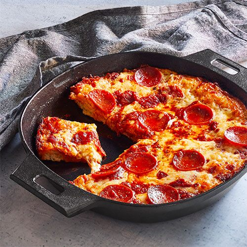

Cast Iron Pizza

Description:
This quick and easy Cast Iron Skillet Pizza is a great way to switch up your usual Friday night pizza routine! This deep dish pizza has a thick crust that's crispy on the outside and chewy on the inside - it's so tasty that you can keep the toppings simple with just cheese or pepperoni!
Ingredients
- 2cups Muenster cheese
- 1cup low-moisture mozzarella cheese
- 1/2 tbsp vegetable oil
- Flour for sprinkling
- 1 lb frozen pizza dough, thawed
- 1/4 tsp Italian Seasoning Mix
- 24 pepperoni slices
- 1/3 cup pizza sauce
Steps
- Preheat the oven to 500°F (260°C).
- Brush the 12" Cast Iron Skillet with oil using a Silicone Basting Brush. On a lightly floured surface, stretch the dough to a 10" square
- Transfer the dough to the skillet and press to fill the pan. Thoroughly pierce the dough with a fork. Top the dough with 1/8 tsp of the seasoning and place the pan on the stovetop. Cook over high heat for 2 to 3 minutes, or until the dough slightly puffs.
- Remove the pan from the heat and top with 12 pepperoni slices, then both cheeses, making sure to cover the entire pizza, including the edges, with the cheese. Top with the remaining seasoning. Use a spoon to dollop the pizza sauce onto the dough. Add the remaining pepperoni slices and bake for 15 minutes on the bottom rack of the oven.